Required Tools
Confirm you have all four items below before starting. The flashing process cannot be completed without any one of them.
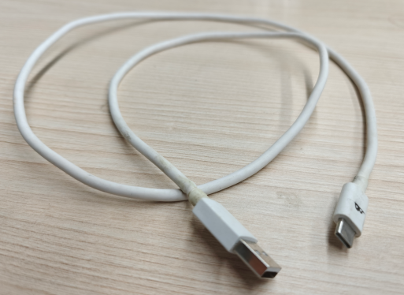
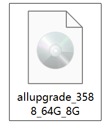
allupgrade_3588_64G_8G(.img format)
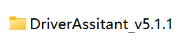
DriverAssistant_v5.1.1 folder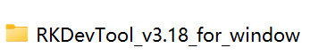
RKDevTool_Release_v3.18 folderBoard Overview — Connectors and Buttons
Before connecting anything, locate these two points on the Android board. You will need both during the flashing process.
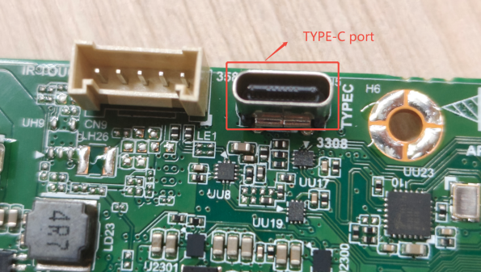
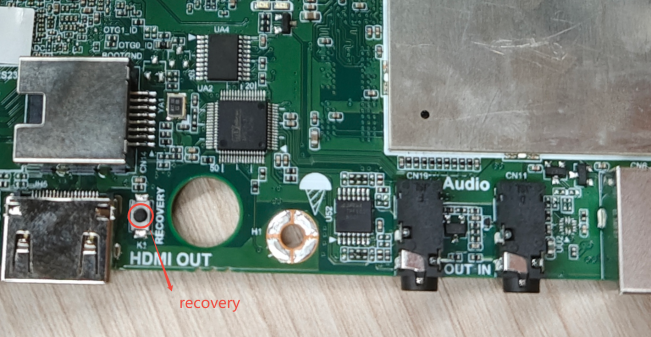
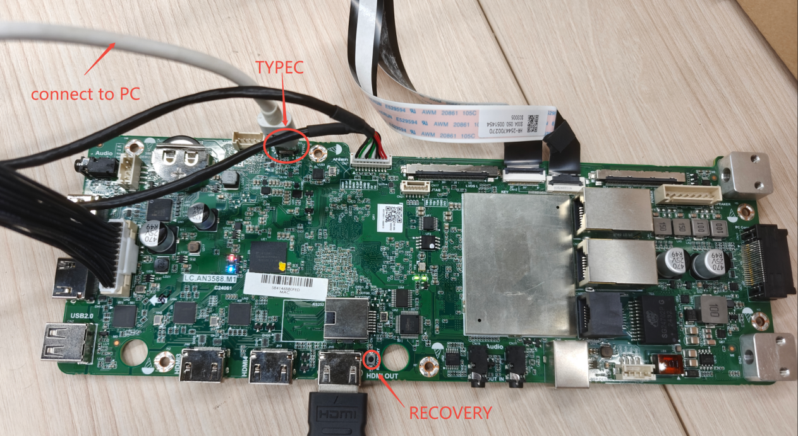
Install the USB Driver
The Rockchip USB driver must be installed on your PC before the flashing tool can communicate with the board. This is a one-time setup step — skip it if the driver is already installed.
-
Open the
DriverAssistant_v5.1.1folder.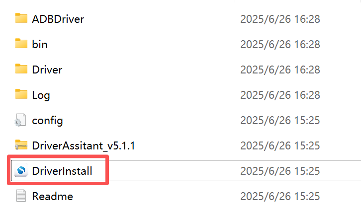
Double-click DriverInstall (highlighted in red) -
The Rockchip Driver Assistant v5.1.1 window will open.
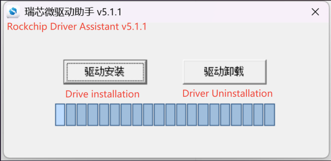
Click Drive Installation (left button) - Click Drive Installation and wait for the process to complete. The progress bar will fill when done.
Open the Flashing Tool
-
Open the
RKDevTool_Release_v3.18folder.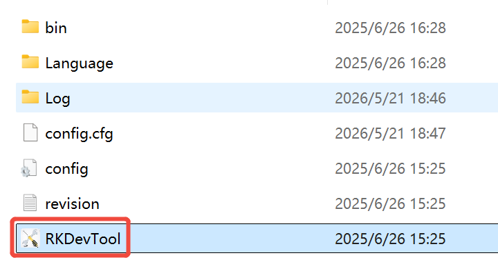
Double-click RKDevTool (highlighted in red) -
The RKDevTool window will open. The status bar at the bottom will display "No Devices Found" — this is normal at this stage.
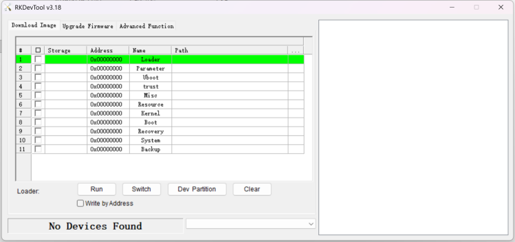
"No Devices Found" is expected — the tool is open and waiting for the board
Put the Board into Recovery (Flash) Mode
This is the most critical step. The sequence of power-off, button-hold, and power-on must be performed in the correct order.
- Disconnect power from the Android board completely.
- Connect the Type-C cable from the board's TYPE-C port to your PC.
- Press and hold the RECOVERY button — keep it held down without releasing.
- While still holding RECOVERY, reconnect power to the board.
- Continue holding for approximately 3–5 seconds, then release the button.
-
Watch the RKDevTool status bar — it should change to "Found One LOADER Device".
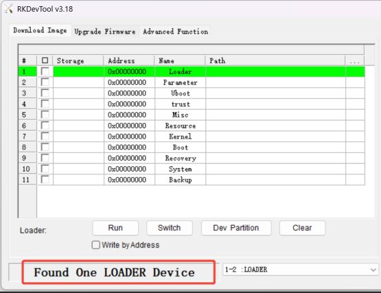
"Found One LOADER Device" confirms the board is ready to be flashed
The Type-C connector is physically reversible but Rockchip boards can be directionally sensitive. If the device is not detected:
- Disconnect power and the Type-C cable.
- Rotate the Type-C connector 180° and plug it back in.
- Repeat the recovery sequence from Step 1.
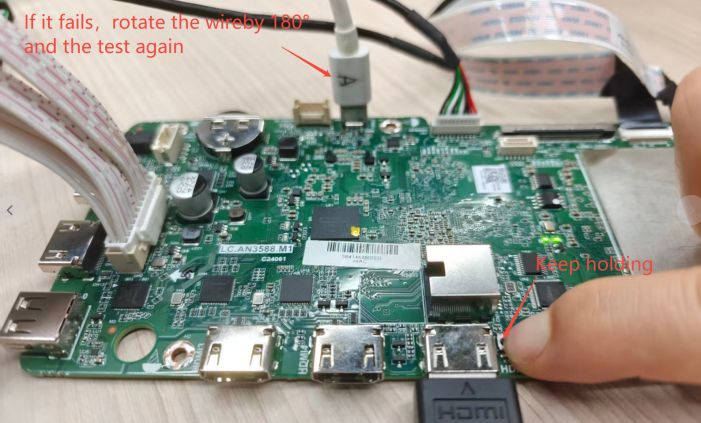
If still not detected after rotating, uninstall and reinstall the driver (Section 3), then try again.
Load and Flash the Firmware
With "Found One LOADER Device" confirmed, follow these steps in RKDevTool. The diagram below shows the numbered click order.
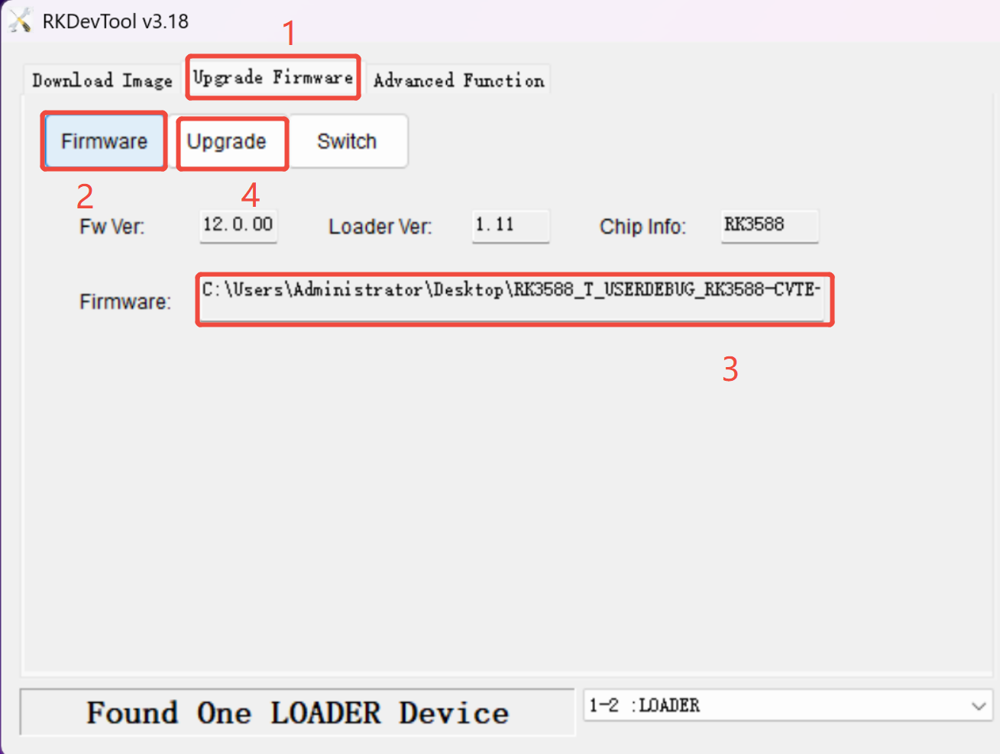
- ① Click "Upgrade Firmware" tab at the top of the RKDevTool window.
- ② Click the "Firmware" button. A file browser will open.
- ③ Select the firmware file — navigate to and open
allupgrade_3588_64G_8G. The file path will appear in the Firmware field, confirming it is loaded. - ④ Click "Upgrade" to begin flashing.
The log panel on the right will show progress. A successful flash produces this sequence:
Test Device Success
Check Chip Start
Check Chip Success
Get FlashInfo Start
Get FlashInfo Success
Prepare IDB Start
Prepare IDB Success
Download IDB Start
Download IDB Success
Download Firmware Start
Download Firmware (100%)...
Download Firmware Success ✓
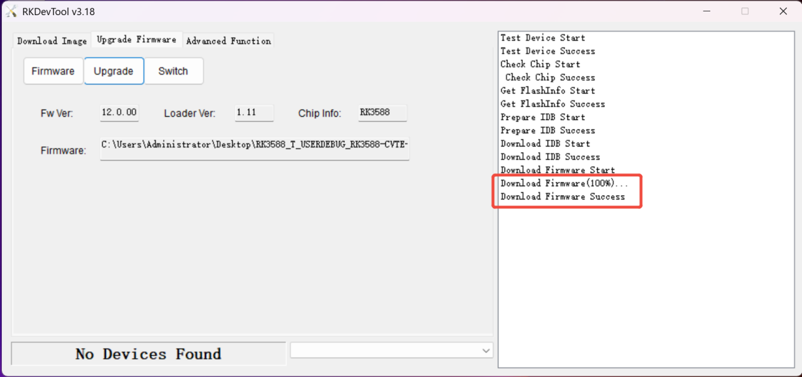
Verify Boot and Perform Factory Reset
After the flash completes, the board reboots automatically into Android. A factory reset is required to clear any leftover data from the previous firmware.
-
Wait for the board to finish booting. The Android home screen should appear.
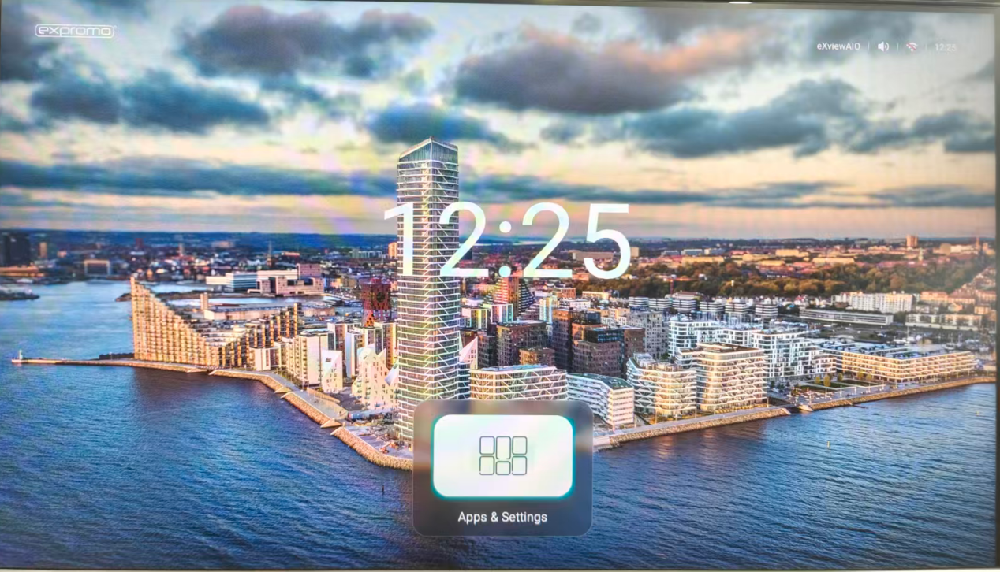
Successful boot — Android home screen is visible - On the Android device, navigate to Settings → System → Factory Reset.
-
Review the warning dialog and tap Confirm.
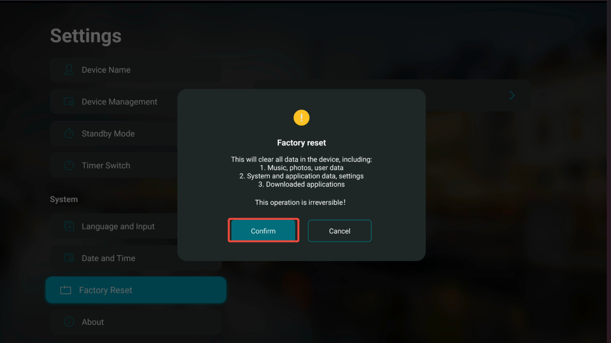
Tap Confirm to complete the factory reset - Wait for the device to reset and reboot. The process is complete.
Troubleshooting
| Problem | Solution |
|---|---|
| "No Devices Found" after entering recovery mode | Rotate the Type-C cable connector 180° and retry the recovery sequence (Section 5). This is the most common cause of detection failure. |
| Device still not detected after rotating cable | Uninstall and reinstall the Rockchip driver via DriverInstall (Section 3), then retry the full recovery sequence. |
| RKDevTool cannot open the firmware file | Confirm the file is the correct .img for this board: allupgrade_3588_64G_8G. Ensure it is not compressed (.zip) — extract it first if needed. |
| Flash fails or stops partway through | Check that the USB cable is firmly connected at both ends. Close RKDevTool, repeat the recovery entry sequence (Section 5), then start the upgrade again (Section 6). |
| Board does not boot after flashing | Repeat the entire procedure from Section 5. If the board remains unresponsive, confirm the firmware file matches the board model (64G storage, 8G RAM variant). |
| Android boots but behaves unexpectedly | Ensure the factory reset (Section 7) was completed. Old cached data from a previous firmware version is the most common cause of post-flash issues. |